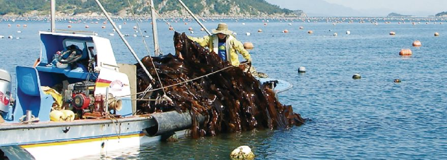
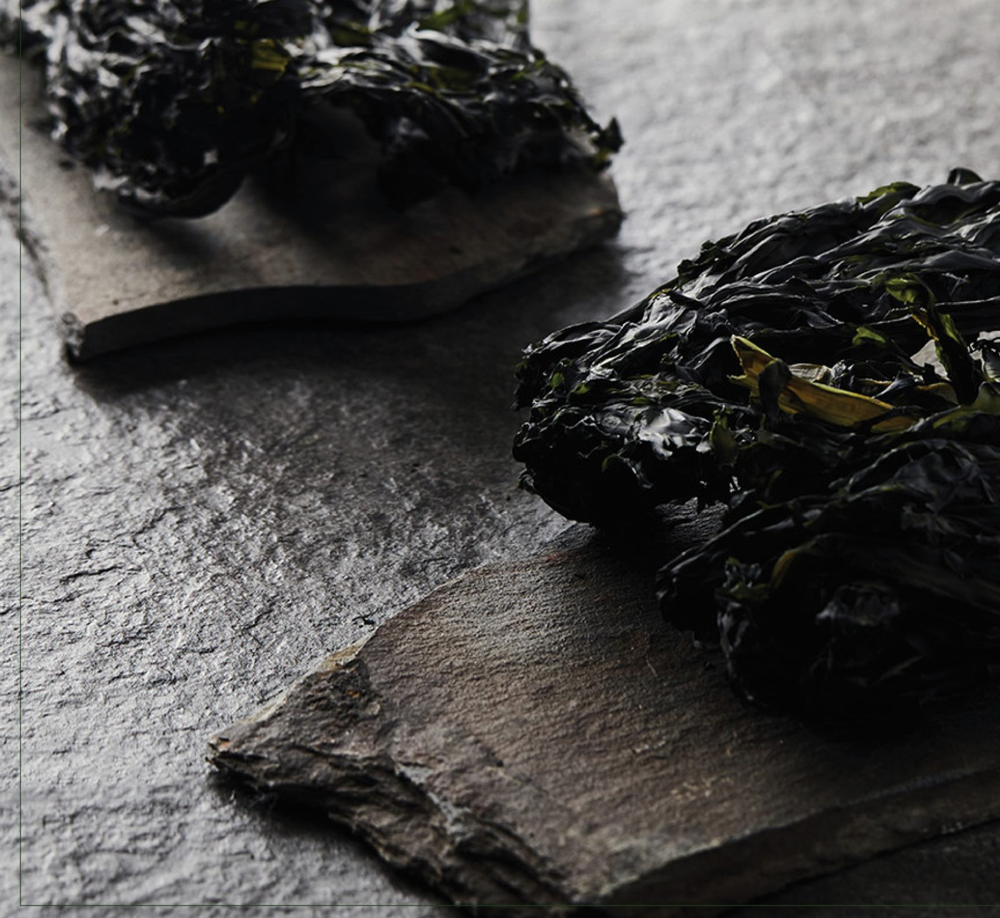
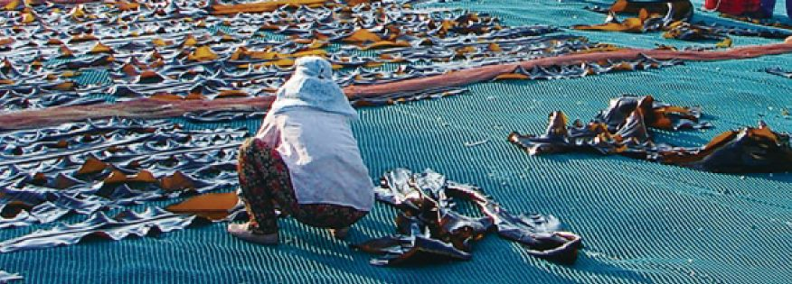
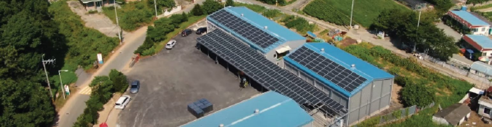
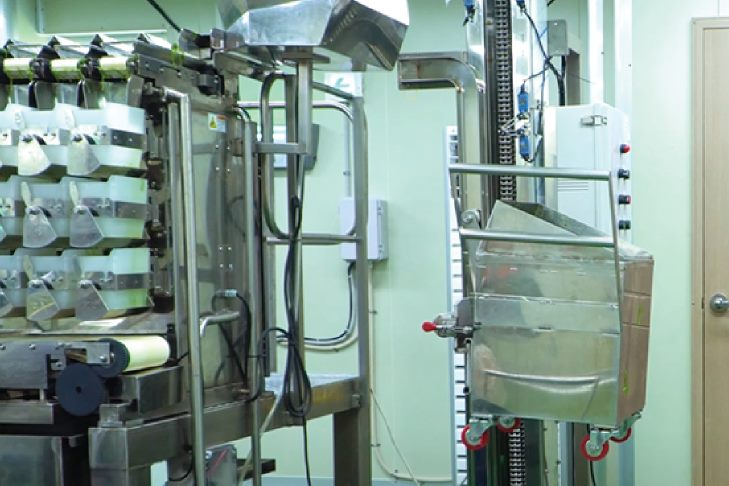
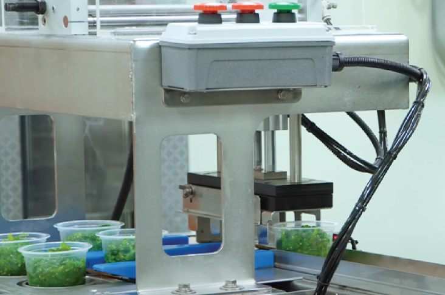
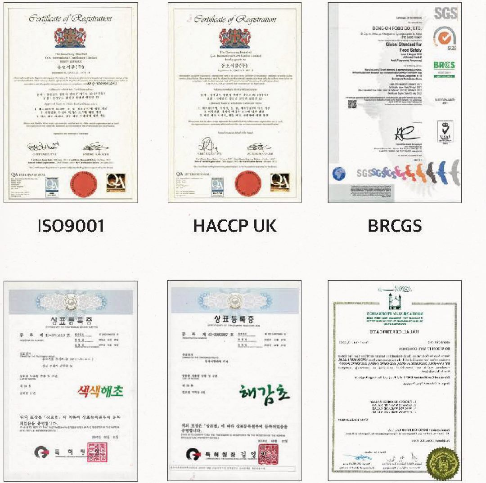

01
Collecting High-Quality Ingredients
We thoroughly select the best ingredients — seaweed that has endured the rough waters of the southern sea.
Since 1973 · Namdo, Korea
For two generations, Dongoh Food has turned the clean, unpolluted waters of Korea’s southern sea into honest seaweed products — trusted at tables across Japan, the Americas and Southeast Asia.
바다를 담아내는 기업, 동오식품
Company Introduction
Since its foundation in 1973, Dongoh Food has been focusing on processing and exporting fisheries. We mainly focus on seaweed processing and exports to Japan, the Americas, and Southeast Asia.
Building on secondary seasoning and processing, we continue to increase our added value — and promise to produce reliable, healthy food based on accumulated experience and deep knowledge, to become a global company offering higher-quality seaweed at better value.


We thoroughly select the best ingredients — seaweed that has endured the rough waters of the southern sea.

We dry our products at temperatures as low as natural wind — 18–20 °C — to keep flavour and texture intact.
Corporate Philosophy
With our philosophy of “Bringing Sea to Customers,” Dongoh Food always does its best to make fishery products from the clean sea of Korea.
Accelerating the development of new technologies and products for advanced business.
Righteous management focusing on internal stability, based on experience and wisdom.
Producing reliable food based on a wealth of experience and deep knowledge — improving the quality of our customers’ dietary life.

History
Dongoh Food Company founded
Expansion of the Gangjin plant in Jeollanam-do
Selected as a promising small and medium-sized enterprise
Million-Dollar Export Tower
US FDA · ISO 9001 · ISO 14001 · HACCP (Europe) certification
Busan plant expansion and transfer
Five Million-Dollar Export Tower
Completion of seasoning processing facilities at the Busan plant
Global food safety standard BRCGS certification
Food Safety Management Certification (HACCP)
ISO 22000 Food Safety Management System certification
Technical Status
Our facilities are equipped with the machinery needed to clean, dry, inspect and pack seaweed with care:


Collect sea mustard
Clean
Dehydrate
Inspect foreign objects
Dry
Detect metals
Packing
Release
Certificates & Awards
Dongoh Food has acquired diverse Korean and global certifications to provide safe products, and will continue to do its best to enhance the quality of our customers’ dietary lives.

Award
Won the “7 Million Dollar Export Tower Award”
Organized by the Korea International Trade Association · also awarded by Gyeongsangnam-do
Product Introduction
Six product lines, from ready-to-eat seaweed salads to traditional dried and salted seaweed.
Contact
For export inquiries, product samples or partnership, please get in touch with our team.
Email us60, Gaju-ro, Jinhae-gu, Changwon-si,
Gyeongsangnam-do, Republic of Korea
13, Yeongpung-gil, Chilyang-myeon, Gangjin-gun,
Jeollanam-do, Republic of Korea